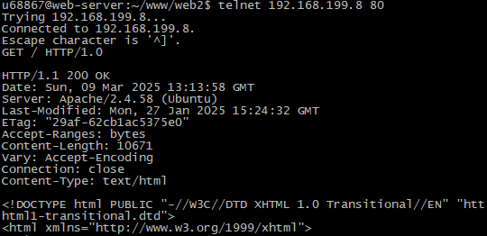
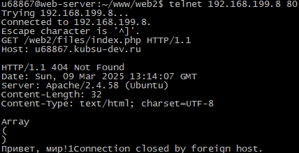
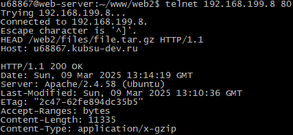
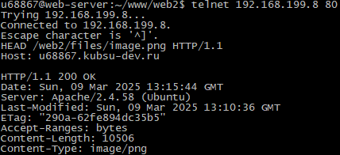
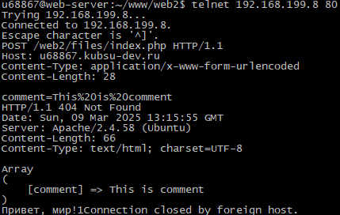
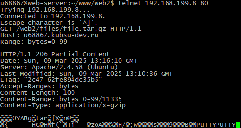
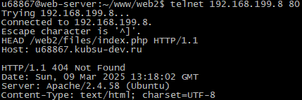

Использовала команду telnet 192.168.199.8 80 для соединения с сервером. Далее получила методом GET в протоколе HTTP 1.0 главную страницу сайта:
Чтобы получить внутреннюю страницу в протоколе HTTP 1.1, использовала заголовок Host: u68867.kubsu-dev.ru:
Размер файла показывает заголовок Content-Length. Для файла file.tar.gz:
Медиатип файла показывает заголовок Content-Type. Для файла image.png:
Чтобы отправить комментарий на сервер, использовала метод POST и заголовки Content-Type: application/x-www-form-urlencoded и Content-Length: 28:
Использовала заголовок Range: bytes=0-99 для получения первых 100 байт файла file.tar.gz:
Кодировка файла указывается в заголовке Content-Type для текстовых файлов. Для файла index.php:
